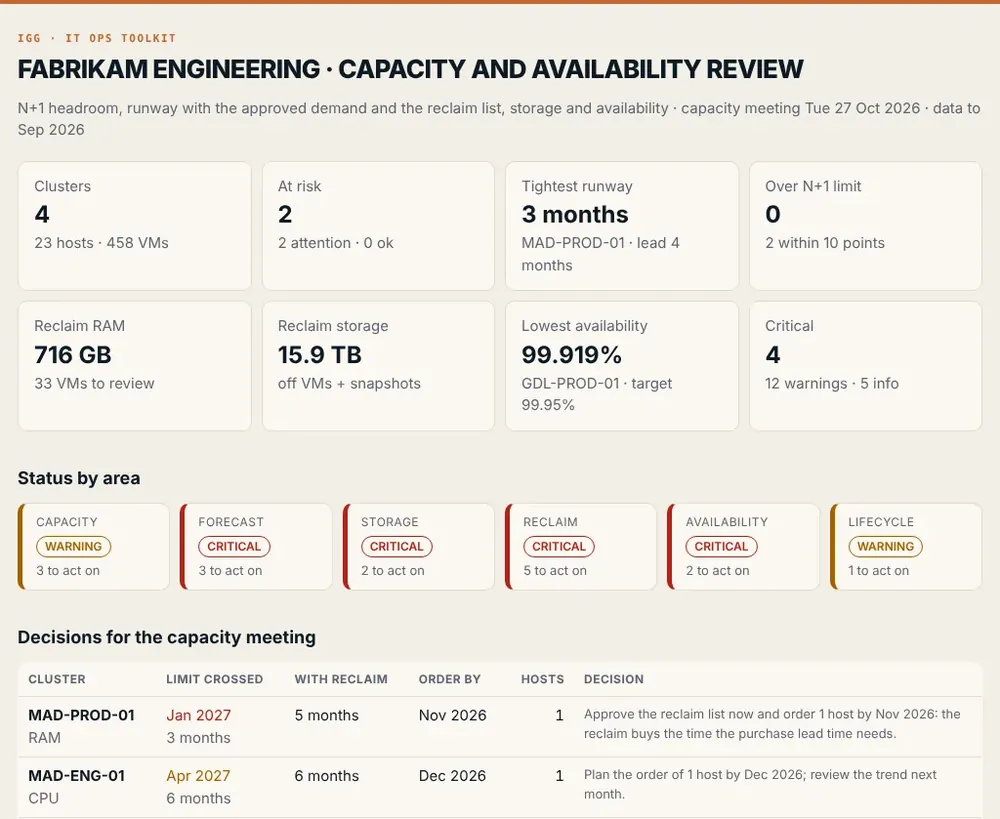

A cluster at 74% of its RAM looks healthy on the dashboard, but without the host that HA, the high-availability feature, keeps as a spare it is at 85% of what is left. It grows half a point a month and two approved projects land in January and March, so it crosses its N+1 limit, the level at which it can still lose a host, in January. New hosts take four months to order, deliver and add, so the decision was due in September. That is the reasoning behind the monthly capacity review published with this post, an open-source tool that runs on demo data from a made-up engineering company with a private cloud in Madrid and Guadalajara.
In the demo, with the problems placed on purpose, the Madrid production cluster crosses its N+1 limit in January once the approved projects are counted. The reclaim list moves that date to March, enough to order the hosts in November. The demo has two vSphere production clusters, a Nutanix AHV cluster, a management cluster, 23 hosts and 458 VMs.
Capacity measured as a date, not a percentage
For each cluster, the review calculates the CPU and RAM left when the largest host fails, the vCPU:pCPU ratio against the policy and hosts in maintenance. The runway takes the latest p95, the level usage stays under 95% of the time, adds a 12-month linear trend and the approved projects at their go-live month, and takes away the reclaim list. The result is the month each cluster crosses its limit, the month to order by and the hosts to add.
Powered-off VMs and old snapshots that move the date
The reclaim list covers VMs powered off for 30 or 90 days, idle or oversized VMs, old snapshots and VMs without an owner, with the RAM and storage each gives back. It only counts when it moves the date. The review also flags datastores low on free space, cluster outages against the availability target and hosts out of vendor support. The output is a web report with a runway chart per cluster, a decisions table for the meeting and CSV files.
How to use it with real data
A read-only PowerShell exporter reads vCenter through PowerCLI and Nutanix Prism Central through its REST API. It runs on Python with the standard library only, with 15 tests and a runbook. The suggested start is the last 12 months of data and keeping each month's output so the next review compares the forecast with what happened.
Where it comes from
The tool comes from running private cloud infrastructure on vCenter and vSphere, VMware VCF with vSAN and NSX-T, Nutanix, OpenShift and HPE GreenLake, on Dell, HP and Supermicro servers with SAN, NAS and NetApp storage, and from formal capacity and availability management. The lesson behind it is that the capacity meeting should end with dates and owners, not percentages.
Want to bring it to your environment or adapt it to your case? Get in touch and we can look at it together.
Tech Career Lab · newsletter
Found this useful? Every two weeks I send one practical idea for IT professionals: LinkedIn, projects, networking and hiring processes.
Sign up and get the 33 ideas →